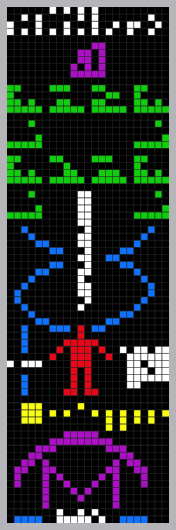

L'ingénieur américain Karl Jansky découvrit les ondes radio émanant de l'espace en 1931, grâce à une antenne bricolée. Les scientifiques utilisent ces ondes pour étudier divers objets célestes et tenter de contacter des formes de vie extraterrestre.
En haut, les nombres de 1 à 10 pour indiquer comment nous comptons. En vert, les symboles des éléments chimiques qui constitut la vie terrestre En blue, Une molecule d'ADN En rouge, Une être humain et la population terrestre En jaune, le systeme solaire avec la Terre surélevé En violet, Le telescope d'Arecibo